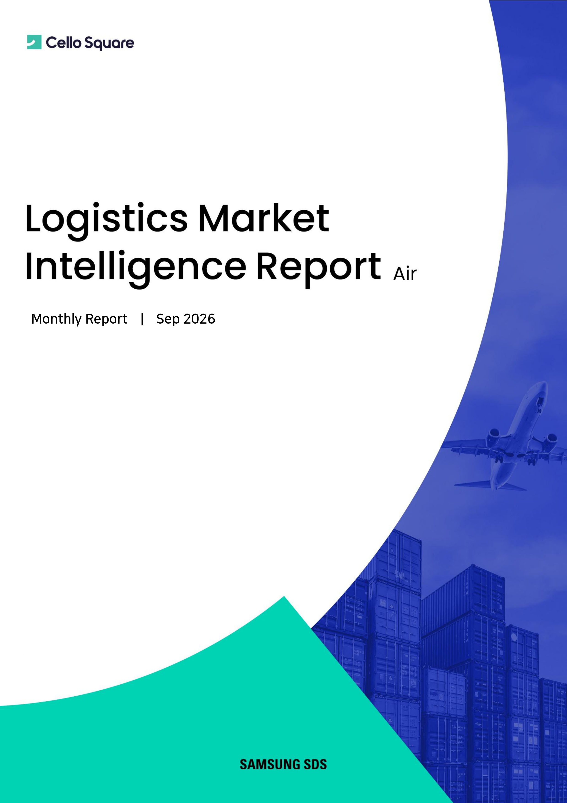

반도체·AI 서버와 인도발 강세는 이어지고, 유럽향 이커머스 위축은 더 뚜렷해지고 있습니다
2026년 7월 글로벌 항공 화물 수요는 전년 동기 대비 4.7% 증가하며 성장이 이어졌습니다. 트랜스퍼시픽 노선의 해상 운임 급등에 따른 Modal Shift 효과와 아시아-북미향 반도체·AI 서버 화물이 수요 확대를 이끌었고, 전용 화물기 물동은 전년 대비 13.9% 늘며 5년 만에 최대 증가폭을 기록한 반면 여객기(Belly) 화물 수송량은 7.0% 감소하며 화물기 중심의 성장 구도가 뚜렷해졌습니다.
공급은 7월에 전년 대비 1.8% 증가하며 수요 증가폭을 하회해 수급 격차가 점진적으로 완화되고 있고, 아시아태평양 항공사 공급이 전체 증가분의 약 74%를 차지했습니다. 운임은 35주차 Baltic Air Freight Index가 2,419로 전주 대비 0.2% 하락했지만 전년 대비 21.0% 높은 수준을 유지했으며, 인도발 노선은 중동 공역 제한과 우회 운항 영향으로 5월 이후 전 노선이 전년 대비 50~80% 상승세를 지속하고 있습니다. 본 백서는 항공 화물 수요와 공급, 주요 공항 처리 물동량, Baltic Air Freight Index와 노선별 운임 흐름을 살펴보고 삼성SDS의 단기 전망을 통해 9~10월 시장의 주요 변수를 짚어봅니다.

주요 개념 정의
- 항공 화물 수요
- 항공으로 운송되는 화물의 전체 수요 규모를 의미합니다. 본 백서에서는 IATA와 WorldACD 등의 지표를 활용해 전년·전월 대비 수요 변화와 지역별 물동 흐름을 살펴봅니다.
- 적재율, Load Factor
- 공급된 항공 화물 수송능력 가운데 실제 화물이 차지한 비율입니다. 수요와 공급의 균형을 판단하는 대표적인 지표로, 공급 증가보다 수요 증가가 빠를 경우 시장의 타이트함을 보여줄 수 있습니다.
- Belly Capacity
- 여객기 하부 화물칸을 활용한 항공 화물 공급을 의미합니다. 여객편과 대형기 운항 변화에 영향을 받기 때문에 항공사 운항 계획이 화물 공급에도 직접적인 변수가 됩니다.
- Freighter Capacity
- 화물 전용 항공기가 제공하는 공급량입니다. 2026년 7월에는 전용 화물기 물동이 전년 동기 대비 13.9% 증가하며 5년 만에 최대 증가폭을 기록하는 등, 글로벌 항공 화물 성장을 주도하고 있습니다.
- 트랜스퍼시픽, Transpacific
- 아시아와 북미를 연결하는 태평양 횡단 노선을 의미합니다. 반도체·AI 서버 물동을 중심으로 대만·인천발 화물기 투입이 확대되며 고수익 노선 중심의 공급 재배치 흐름이 뚜렷해지고 있습니다.
- Baltic Air Freight Index
- 일반 항공 화물의 주간 거래 요율을 반영하는 운임지수입니다. 시장 전체 운임 방향과 주요 노선별 운임 흐름을 비교하는 데 활용됩니다.
- Samsung SDS TAC Forecast
- Samsung SDS Brightics를 기반으로 주요 아시아발 미주 노선의 단기 항공 운임 흐름을 전망하는 지표입니다. 본 백서에서는 9~10월 노선별 운임 방향을 살펴보는 데 활용합니다.
2026년 9월 항공 화물 시장, 핵심 질문으로 살펴보기
-
-
Q1.
2026년 9월 항공 화물 시장의 핵심 흐름은 무엇인가요?
-
가장 큰 특징은 화물 구성별 뚜렷한 차별화와 인도발 강세의 지속입니다. 7월 글로벌 수요는 전년 동기 대비 4.7% 증가한 가운데, 전용 화물기 물동은 13.9% 급증한 반면 여객기(Belly) 화물 수송량은 7.0% 감소하며 화물기 중심의 성장 구도가 자리 잡았습니다.
노선별로는 대만·한국·인도발 북미향 반도체·AI 서버 물동이 견조하게 유지되는 반면, 중국·홍콩발 유럽향은 소액 화물 관세 여파와 이커머스 위축이 지속되며 상대적으로 약세를 이어가고 있습니다. 시장 평균보다 화물 종류와 출발지·도착지에 따른 흐름을 구분해 보는 것이 중요해지고 있습니다.
-
Q1.
-
-
Q2.
항공 화물 수요는 어떤 화물이 주도하고 있나요?
-
반도체와 AI 서버 등 고부가 기술화물이 지속적인 성장 동력입니다. 7월에는 트랜스퍼시픽 노선의 해상 운임 급등에 따른 Modal Shift 효과가 더해지며 아시아-북미향 반도체·AI 서버 물동이 전체 수요 확대를 이끌었습니다.
인도발 노선은 중동 공역 제한과 우회 운항 영향으로 5월 이후 전 노선이 전년 대비 50~80% 상승세를 지속하고 있으며, 특히 인도의 IT·전자 및 제약 수출 화물 허브인 벵갈루루 공항을 중심으로 화물기 공급이 크게 확대되고 있습니다. 반면 중국·홍콩발 유럽향 이커머스 물동은 소액 화물 관세 시행 이후 위축이 이어지며 화물 구성의 변화가 노선별 수요 차이를 확대시키고 있습니다.
-
Q2.
-
-
Q3.
공급은 수요 증가를 따라가고 있나요?
-
7월 글로벌 공급은 전년 동기 대비 1.8% 증가(전월 대비 2.4% 증가)했으나 수요 증가폭(4.7%)을 하회하며 수급 격차는 점진적으로 완화되고 있습니다. 아시아태평양 항공사 공급이 전체 증가분의 약 74%를 차지한 반면, 북미 항공사 공급은 약 1.5% 감소하며 지역별 온도차가 뚜렷했습니다.
8월 공급은 전년 동기 대비 0.4% 증가로 여객기는 보합, 화물기 확장이 전체 성장을 견인했고, 글로벌 공급 점유율은 여객기 43%, 화물기 38%, 특송기 19%로 재편되고 있습니다. 반도체·AI 서버 수요로 대만·인천발 화물기 투입이 확대되는 반면 중국·홍콩발 감편으로 유럽향은 체감 공급 부족이 이어지고 있습니다.
-
Q3.
-
-
Q4.
주요 글로벌 공항의 화물 처리량은 어떻게 움직였나요?
-
2026년 7월 로스앤젤레스는 20만 7천 3백 톤으로 전년 동월 대비 14.6% 증가하며 가장 큰 성장을 보였습니다. 동아시아발 반도체·서버 랙 화물 유입이 태평양 노선 수요를 견인했고, 싱가포르 창이는 19만 3천 톤으로 7.2%, 프랑크푸르트는 17만 6천 6백 톤으로 1.1% 증가했습니다.
반면 홍콩은 42만 2천 톤으로 전년 동월 대비 1.9% 감소하며 유럽향 이커머스 위축의 여파가 본격 반영되었습니다. 주요 허브의 처리량 변화에서도 반도체·전자 화물이 견인한 아시아-미주 강세와 유럽 이커머스 약세라는 두 흐름이 뚜렷하게 확인됩니다.
-
Q4.
-
-
Q5.
8월 항공 운임은 어떤 흐름을 보였나요?
-
35주차 Baltic Air Freight Index는 2,419로 전주 대비 0.2% 하락했으나, 8월 운임은 7월 급락세가 진정되며 보합권 등락이 지속되었습니다. 8월 평균은 2,422로 전월 대비 1.5% 하락했지만 전년 동월 대비로는 19.1% 높은 수준을 유지하며 비수기 내 고운임 국면이 이어지고 있습니다.
8월 미주착은 홍콩발이 2.8% 상승하며 상대적으로 견조했고, 중국·홍콩발 유럽착은 전월 대비 2.1~8.7% 하락했습니다. 인도발은 미국착 평균 운임이 전년 대비 54.3%, 유럽착이 60.4% 상승하며 5월 이후의 강세를 이어갔고, 인도발 미주향은 전월 대비 6.4% 상승하며 아시아-미주 노선 중 가장 강한 상승 탄력을 보였습니다.
-
Q5.
-
-
Q6.
9~10월 항공 운임은 어떻게 전망되며, 어떤 변수를 주의해야 하나요?
-
9월 항공 시장은 아시아발 반도체 수요 강세가 이어지는 가운데 미주향 중심 고운임 기조가 유지될 전망입니다. 성수기 진입 효과와 중국·홍콩발 노선의 운임 반등, 아시아-미주 노선 화물기 가동률 상승이 운임 하단을 지지할 가능성이 큽니다.
전반적으로 항공 운임은 중국·홍콩발 유럽 노선 운임 회복과 성수기 진입 효과가 맞물리며 하락세가 진정되고 소폭 상승 전환이 전망됩니다. 중동 공역 통제와 우회 운항, 항공유 가격, 유럽 이커머스 수요 회복 속도, 북미향 AI·반도체 물동 지속성이 단기 운임 변동성을 좌우할 주요 변수입니다.
-
Q6.
2026년 9월 항공 화물 시장 핵심 키워드 한눈에 보기
| 구분 | 핵심 내용 |
|---|---|
| 주요 주제 | 2026년 9월 글로벌 항공 화물 수요·공급 변화와 주요 노선별 운임 전망 |
| 글로벌 수요 | 7월 수요 전년 대비 4.7% 증가, 반도체·AI 서버 및 Modal Shift 효과가 성장 견인 |
| 화물기 vs 여객기 | 전용 화물기 물동 +13.9%로 5년 최대, 여객기(Belly) 화물 수송량 -7.0% |
| 북미향 수요 | 대만·한국발 반도체·AI 서버 물동이 견조하게 유지, 트랜스퍼시픽 강세 지속 |
| 인도발 강세 | 5월 이후 전 노선 전년 대비 50~80% 상승, 벵갈루루 공항 중심 화물기 확대 |
| 유럽향 수요 | 소액 화물 관세 시행 이후 중국·홍콩발 이커머스 물동 위축 지속 |
| 글로벌 공급 | 7월 공급 전년 대비 1.8% 증가로 수요 증가폭 하회, 수급 격차 점진적 완화 |
| 공급 재배치 | 아시아태평양 항공사가 증가분 약 74% 차지, 북미 항공사 공급 약 1.5% 감소 |
| 공급 점유율 | 8월 여객기 43%, 화물기 38%, 특송기 19%로 화물기 확장이 성장 견인 |
| 주요 공항 | 7월 LAX +14.6%, SIN +7.2%, FRA +1.1%, HKG -1.9%의 전년 대비 물동 |
| 항공 운임지수 | 35주차 Baltic Air Freight Index 2,419, 전주 대비 0.2% 하락 · 전년 대비 21.0% 상승 |
| 8월 평균 운임 | 2,422로 전월 대비 1.5% 하락, 전년 대비 19.1% 상승 |
| 북미향 운임 | 홍콩발 미주 +2.8%, 상해발 -3.0%로 상대적 견조, 인도발 미주 +6.4% MoM |
| 유럽향 운임 | 중국·홍콩발 유럽착 전월 대비 -2.1~8.7%로 하락세 지속 |
| 9~10월 전망 | 아시아-미주 강세 지속, 유럽 회복과 성수기 진입 효과로 소폭 상승 전환 전망 |
| 주요 리스크 | 중동 공역 통제, 항공유 가격, 유럽 이커머스 회복 속도, AI·반도체 물동 지속성 |